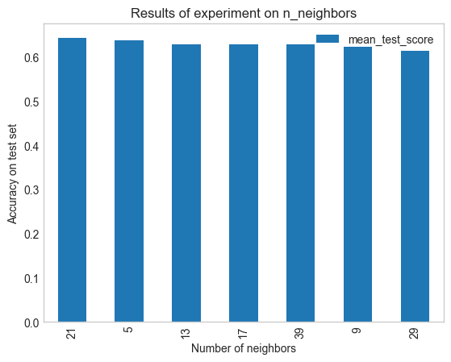
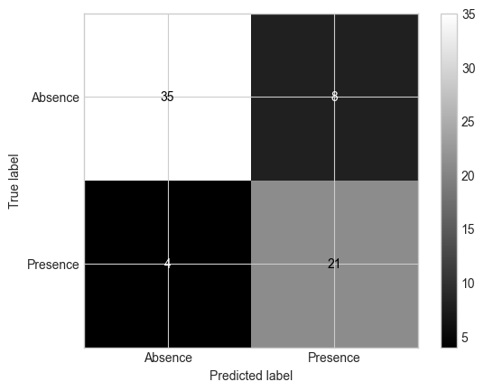
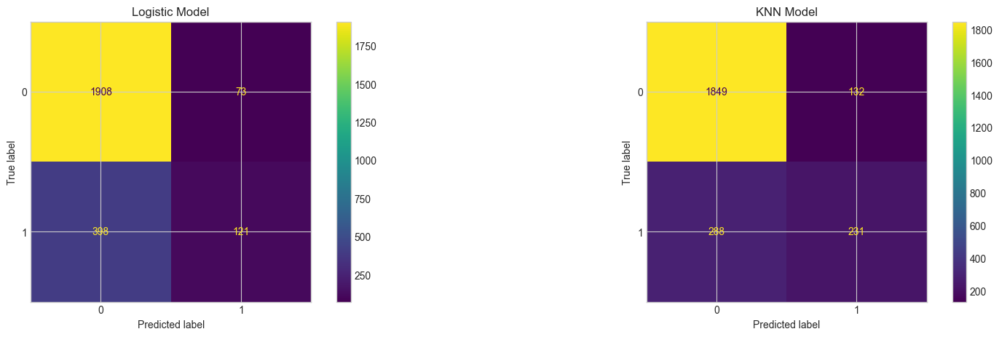
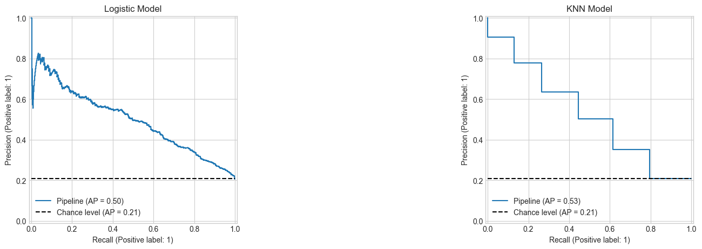

Evaluating Classification Models#
OBJECTIVES
Use the confusion matrix to evaluate classification models
Use precision and recall to evaluate a classifier
Explore lift and gain to evaluate classifiers
Determine cost of predicting highest probability targets
import pandas as pd
import numpy as np
import matplotlib.pyplot as plt
from sklearn.linear_model import LogisticRegression
from sklearn.neighbors import KNeighborsClassifier
from sklearn.preprocessing import StandardScaler, OneHotEncoder, PolynomialFeatures
from sklearn.compose import make_column_transformer
from sklearn.metrics import ConfusionMatrixDisplay, confusion_matrix
from sklearn.datasets import load_breast_cancer, load_digits, fetch_openml
Problem#
Below, a dataset with information on individuals and whether or not they have heart disease is loaded and displayed. A LogisticRegression and KNeighborsClassifier are used to build predictive models on train/test splits. Examine the confusion matrices and explore the classifiers mistakes.
Which model do you prefer and why?
Do you care about predicting each of these classes equally?
Is there a ratio other than accuracy you think is more important based on the confusion matrix?
heart = fetch_openml(data_id=43823).frame
heart.head()
| Age | Sex | Chest_pain_type | BP | Cholesterol | FBS_over_120 | EKG_results | Max_HR | Exercise_angina | ST_depression | Slope_of_ST | Number_of_vessels_fluro | Thallium | Heart_Disease | |
|---|---|---|---|---|---|---|---|---|---|---|---|---|---|---|
| 0 | 70 | 1 | 4 | 130 | 322 | 0 | 2 | 109 | 0 | 2.4 | 2 | 3 | 3 | Presence |
| 1 | 67 | 0 | 3 | 115 | 564 | 0 | 2 | 160 | 0 | 1.6 | 2 | 0 | 7 | Absence |
| 2 | 57 | 1 | 2 | 124 | 261 | 0 | 0 | 141 | 0 | 0.3 | 1 | 0 | 7 | Presence |
| 3 | 64 | 1 | 4 | 128 | 263 | 0 | 0 | 105 | 1 | 0.2 | 2 | 1 | 7 | Absence |
| 4 | 74 | 0 | 2 | 120 | 269 | 0 | 2 | 121 | 1 | 0.2 | 1 | 1 | 3 | Absence |
heart.info()
<class 'pandas.core.frame.DataFrame'>
RangeIndex: 270 entries, 0 to 269
Data columns (total 14 columns):
# Column Non-Null Count Dtype
--- ------ -------------- -----
0 Age 270 non-null int64
1 Sex 270 non-null int64
2 Chest_pain_type 270 non-null int64
3 BP 270 non-null int64
4 Cholesterol 270 non-null int64
5 FBS_over_120 270 non-null int64
6 EKG_results 270 non-null int64
7 Max_HR 270 non-null int64
8 Exercise_angina 270 non-null int64
9 ST_depression 270 non-null float64
10 Slope_of_ST 270 non-null int64
11 Number_of_vessels_fluro 270 non-null int64
12 Thallium 270 non-null int64
13 Heart_Disease 270 non-null object
dtypes: float64(1), int64(12), object(1)
memory usage: 29.7+ KB
from sklearn.model_selection import train_test_split, cross_val_score
X = heart.iloc[:, :-1]
y = heart['Heart_Disease']
X_train, X_test, y_train, y_test = train_test_split(X, y, random_state = 11)
#instantiate estimator with appropriate parameters
lgr = None
knn = None
#models require scaling data first
scaler = StandardScaler()
from sklearn.pipeline import Pipeline
#instantiate Pipeline's for each model
lgr_pipe = None
knn_pipe = None
#fit the models on the training data
#plot confusion matrices
# fig, ax = plt.subplots(1, 2, figsize = (20, 5))
# ConfusionMatrixDisplay.from_estimator(lgr_pipe, X_test, y_test, ax = ax[0])
# ConfusionMatrixDisplay.from_estimator(knn_pipe, X_test, y_test, ax = ax[1])
Experimenting with n_neighbors#
In the example above, we used a single value for k to predict heart disease. As we discussed, different numbers of neighbors may be appropriate in different problems. To experiment with different numbers of neighbors we can use a GridSearchCV to search over different values of k and select the parameters that do the best at predicting on a test set. Below, its use is demonstrated using a single estimator and a pipeline.
from sklearn.model_selection import GridSearchCV
knn = KNeighborsClassifier()
knn.get_params()
{'algorithm': 'auto',
'leaf_size': 30,
'metric': 'minkowski',
'metric_params': None,
'n_jobs': None,
'n_neighbors': 5,
'p': 2,
'weights': 'uniform'}
Parameters for a grid search#
Whatever the parameters are for your model, GridSearchCV accepts a dictionary of the form:
{'parameter_name': values to search over}
or when you are searching a pipeline (note the double underscore):
{'named_step_in_pipeline__parameter_name': values to search over}
#test 5, 9, 13, 17, 21, 29, and 39 neighbors
params_to_search = {'n_neighbors': [5, 9, 13, 17, 21, 29, 39]}
grid_search = GridSearchCV(estimator=knn, param_grid=params_to_search)
grid_search.fit(X_train, y_train)
GridSearchCV(estimator=KNeighborsClassifier(),
param_grid={'n_neighbors': [5, 9, 13, 17, 21, 29, 39]})In a Jupyter environment, please rerun this cell to show the HTML representation or trust the notebook. On GitHub, the HTML representation is unable to render, please try loading this page with nbviewer.org.
GridSearchCV(estimator=KNeighborsClassifier(),
param_grid={'n_neighbors': [5, 9, 13, 17, 21, 29, 39]})KNeighborsClassifier(n_neighbors=21)
KNeighborsClassifier(n_neighbors=21)
grid_search.best_params_
{'n_neighbors': 21}
results = pd.DataFrame(grid_search.cv_results_)
results
| mean_fit_time | std_fit_time | mean_score_time | std_score_time | param_n_neighbors | params | split0_test_score | split1_test_score | split2_test_score | split3_test_score | split4_test_score | mean_test_score | std_test_score | rank_test_score | |
|---|---|---|---|---|---|---|---|---|---|---|---|---|---|---|
| 0 | 0.002169 | 0.000542 | 0.004439 | 0.000350 | 5 | {'n_neighbors': 5} | 0.634146 | 0.634146 | 0.700 | 0.650 | 0.575 | 0.638659 | 0.039961 | 2 |
| 1 | 0.001954 | 0.000179 | 0.004514 | 0.000433 | 9 | {'n_neighbors': 9} | 0.682927 | 0.585366 | 0.675 | 0.575 | 0.600 | 0.623659 | 0.045918 | 6 |
| 2 | 0.001582 | 0.000018 | 0.003874 | 0.000056 | 13 | {'n_neighbors': 13} | 0.658537 | 0.634146 | 0.675 | 0.575 | 0.600 | 0.628537 | 0.036799 | 3 |
| 3 | 0.001608 | 0.000062 | 0.004008 | 0.000215 | 17 | {'n_neighbors': 17} | 0.658537 | 0.634146 | 0.700 | 0.550 | 0.600 | 0.628537 | 0.051031 | 3 |
| 4 | 0.001867 | 0.000480 | 0.004306 | 0.000713 | 21 | {'n_neighbors': 21} | 0.682927 | 0.634146 | 0.650 | 0.600 | 0.650 | 0.643415 | 0.026902 | 1 |
| 5 | 0.001654 | 0.000242 | 0.003868 | 0.000098 | 29 | {'n_neighbors': 29} | 0.658537 | 0.609756 | 0.675 | 0.575 | 0.550 | 0.613659 | 0.047621 | 7 |
| 6 | 0.001538 | 0.000014 | 0.003895 | 0.000014 | 39 | {'n_neighbors': 39} | 0.682927 | 0.658537 | 0.625 | 0.575 | 0.600 | 0.628293 | 0.038861 | 5 |
plt.style.use('seaborn-v0_8-whitegrid')
results.sort_values(by = 'mean_test_score', ascending = False).plot(kind = 'bar', x = 'param_n_neighbors', y = 'mean_test_score')
plt.grid()
plt.title('Results of experiment on n_neighbors')
plt.xlabel('Number of neighbors')
plt.ylabel('Accuracy on test set');

knn_pipe = Pipeline([('scale', StandardScaler()), ('knn', KNeighborsClassifier())])
params = {'knn__n_neighbors': [5, 9, 13, 17, 21, 29, 39]}
grid_for_pipeline = GridSearchCV(knn_pipe, param_grid=params)
grid_for_pipeline.fit(X_train, y_train)
GridSearchCV(estimator=Pipeline(steps=[('scale', StandardScaler()),
('knn', KNeighborsClassifier())]),
param_grid={'knn__n_neighbors': [5, 9, 13, 17, 21, 29, 39]})In a Jupyter environment, please rerun this cell to show the HTML representation or trust the notebook. On GitHub, the HTML representation is unable to render, please try loading this page with nbviewer.org.
GridSearchCV(estimator=Pipeline(steps=[('scale', StandardScaler()),
('knn', KNeighborsClassifier())]),
param_grid={'knn__n_neighbors': [5, 9, 13, 17, 21, 29, 39]})Pipeline(steps=[('scale', StandardScaler()), ('knn', KNeighborsClassifier())])StandardScaler()
KNeighborsClassifier()
grid_for_pipeline.best_params_
{'knn__n_neighbors': 5}
Expanding our metrics

import seaborn as sns
ConfusionMatrixDisplay.from_estimator(grid_for_pipeline, X_test, y_test, cmap = 'gray')
<sklearn.metrics._plot.confusion_matrix.ConfusionMatrixDisplay at 0x13c7e1130>

Problem
In our heart disease example, do you think you care more about predicting the presence of heart disease or the absence of it? As such, which metric is more appropriate, precision or recall? Look back at your confusion matrices and calculate the updated metric – which estimator was better?
What is happening with the code below?
y_train_num = np.where(y_train == 'Presence', 1, 0)
y_test_num = np.where(y_test == 'Presence', 1, 0)
grid_to_select_best_recall = GridSearchCV(knn_pipe, param_grid=params, scoring = 'recall').fit(X_train, y_train_num)
print(f'Best recall: {grid_to_select_best_recall.score(X_test, y_test_num)}')
Best recall: 0.84
grid_to_select_best_precision = GridSearchCV(knn_pipe, param_grid=params, scoring = 'precision').fit(X_train, y_train_num)
print(f'Best precision: {grid_to_select_best_precision.score(X_test, y_test_num)}')
Best precision: 0.7241379310344828
Problem#
Below, a dataset around customer churn is loaded and displayed. Classification models on the data are given and their confusion matrices.
Suppose you want to offer an incentive to customers you think are likely to churn, what is an appropriate evaluation metric? Why?
churn = fetch_openml(data_id = 43390).frame
churn.head()
| RowNumber | CustomerId | Surname | CreditScore | Geography | Gender | Age | Tenure | Balance | NumOfProducts | HasCrCard | IsActiveMember | EstimatedSalary | Exited | |
|---|---|---|---|---|---|---|---|---|---|---|---|---|---|---|
| 0 | 1 | 15634602 | Hargrave | 619 | France | Female | 42 | 2 | 0.00 | 1 | 1 | 1 | 101348.88 | 1 |
| 1 | 2 | 15647311 | Hill | 608 | Spain | Female | 41 | 1 | 83807.86 | 1 | 0 | 1 | 112542.58 | 0 |
| 2 | 3 | 15619304 | Onio | 502 | France | Female | 42 | 8 | 159660.80 | 3 | 1 | 0 | 113931.57 | 1 |
| 3 | 4 | 15701354 | Boni | 699 | France | Female | 39 | 1 | 0.00 | 2 | 0 | 0 | 93826.63 | 0 |
| 4 | 5 | 15737888 | Mitchell | 850 | Spain | Female | 43 | 2 | 125510.82 | 1 | 1 | 1 | 79084.10 | 0 |
import warnings
warnings.filterwarnings('ignore')
X = churn.iloc[:, :-1]
y = churn['Exited']
X.drop(['Surname', 'RowNumber', 'CustomerId'], axis = 1, inplace = True)
X_train, X_test, y_train, y_test = train_test_split(X, y, random_state = 11)
encoder = make_column_transformer((OneHotEncoder(drop = 'first'), ['Geography', 'Gender']),
remainder = StandardScaler())
knn_pipe = Pipeline([('transform', encoder), ('model', KNeighborsClassifier())])
lgr_pipe = Pipeline([('transform', encoder), ('model', LogisticRegression())])
knn_pipe.fit(X_train, y_train)
lgr_pipe.fit(X_train, y_train)
Pipeline(steps=[('transform',
ColumnTransformer(remainder=StandardScaler(),
transformers=[('onehotencoder',
OneHotEncoder(drop='first'),
['Geography', 'Gender'])])),
('model', LogisticRegression())])In a Jupyter environment, please rerun this cell to show the HTML representation or trust the notebook. On GitHub, the HTML representation is unable to render, please try loading this page with nbviewer.org.
Pipeline(steps=[('transform',
ColumnTransformer(remainder=StandardScaler(),
transformers=[('onehotencoder',
OneHotEncoder(drop='first'),
['Geography', 'Gender'])])),
('model', LogisticRegression())])ColumnTransformer(remainder=StandardScaler(),
transformers=[('onehotencoder', OneHotEncoder(drop='first'),
['Geography', 'Gender'])])['Geography', 'Gender']
OneHotEncoder(drop='first')
['CreditScore', 'Age', 'Tenure', 'Balance', 'NumOfProducts', 'HasCrCard', 'IsActiveMember', 'EstimatedSalary']
StandardScaler()
LogisticRegression()
#plot confusion matrices
fig, ax = plt.subplots(1, 2, figsize = (20, 5))
ConfusionMatrixDisplay.from_estimator(lgr_pipe, X_test, y_test, ax = ax[0])
ax[0].set_title('Logistic Model')
ConfusionMatrixDisplay.from_estimator(knn_pipe, X_test, y_test, ax = ax[1])
ax[1].set_title('KNN Model');

import ipywidgets as widgets
from ipywidgets import interact
from sklearn.metrics import precision_score, recall_score
def pr_computer(p):
lgr_pipe = Pipeline([('transform', encoder), ('model', LogisticRegression())])
lgr_pipe.fit(X_train, y_train)
ps = lgr_pipe.predict_proba(X_test)[:, 1]
yhat = np.where(ps > p, 1, 0)
ConfusionMatrixDisplay.from_predictions(y_test, yhat)
print(f'Precision {precision_score(y_test, yhat)}\nRecall: {recall_score(y_test, yhat)}')
plt.show()
interact(pr_computer, p = widgets.FloatSlider(min = 0, max = 1, step = .05))
<function __main__.pr_computer(p)>
PrecisionRecallDisplay#
The idea of precision and recall combined with what we saw with changing the probability threshold allows us to understand how precision and recall interact as you run through different probability of positive classes.
from sklearn.metrics import PrecisionRecallDisplay
#plot precision recall curves
fig, ax = plt.subplots(1, 2, figsize = (20, 5))
PrecisionRecallDisplay.from_estimator(lgr_pipe, X_test, y_test, ax = ax[0], plot_chance_level=True)
# ax[0].plot(x1, y1, 'ro', label = f'({x1, y1})')
ax[0].set_title('Logistic Model')
PrecisionRecallDisplay.from_estimator(knn_pipe, X_test, y_test, ax = ax[1], plot_chance_level=True)
ax[1].set_title('KNN Model');

Suppose you need to maintain a recall of .6. What kind of precision do you expect?
Predicting Positives#
Return to the churn example and a Logistic Regression model on the data.
If you were to make predictions on a random 30% of the data, what percent of the true positives would you expect to capture?
Use the predict probability capabilities of the estimator to create a
DataFramewith the following columns:
probability of prediction = 1 |
true label |
|---|---|
.8 |
1 |
.7 |
1 |
.4 |
0 |
Sort the probabilities from largest to smallest. What percentage of the total positives are in the first 3000 rows? What does this tell you about your classifier?
Marketing Problem#
Below, a dataset relating to a Portugese Bank Marketing Campaign is loaded and displayed. Your goal is to build a classifier that optimizes to either precision or recall using whichever metric you think is most appropriate. Estimate the lift your classifier has if you were to contact 20% of the customers most likely to subscribe.
bank = fetch_openml(data_id=1461)
print(bank.DESCR)
**Author**: Paulo Cortez, Sérgio Moro
**Source**: [UCI](https://archive.ics.uci.edu/ml/datasets/bank+marketing)
**Please cite**: S. Moro, R. Laureano and P. Cortez. Using Data Mining for Bank Direct Marketing: An Application of the CRISP-DM Methodology. In P. Novais et al. (Eds.), Proceedings of the European Simulation and Modelling Conference - ESM'2011, pp. 117-121, Guimarães, Portugal, October, 2011. EUROSIS.
**Bank Marketing**
The data is related with direct marketing campaigns of a Portuguese banking institution. The marketing campaigns were based on phone calls. Often, more than one contact to the same client was required, in order to access if the product (bank term deposit) would be (or not) subscribed.
The classification goal is to predict if the client will subscribe a term deposit (variable y).
### Attribute information
For more information, read [Moro et al., 2011].
Input variables:
- bank client data:
1 - age (numeric)
2 - job : type of job (categorical: "admin.","unknown","unemployed","management","housemaid","entrepreneur", "student","blue-collar","self-employed","retired","technician","services")
3 - marital : marital status (categorical: "married","divorced","single"; note: "divorced" means divorced or widowed)
4 - education (categorical: "unknown","secondary","primary","tertiary")
5 - default: has credit in default? (binary: "yes","no")
6 - balance: average yearly balance, in euros (numeric)
7 - housing: has housing loan? (binary: "yes","no")
8 - loan: has personal loan? (binary: "yes","no")
- related with the last contact of the current campaign:
9 - contact: contact communication type (categorical: "unknown","telephone","cellular")
10 - day: last contact day of the month (numeric)
11 - month: last contact month of year (categorical: "jan", "feb", "mar", ..., "nov", "dec")
12 - duration: last contact duration, in seconds (numeric)
- other attributes:
13 - campaign: number of contacts performed during this campaign and for this client (numeric, includes last contact)
14 - pdays: number of days that passed by after the client was last contacted from a previous campaign (numeric, -1 means client was not previously contacted)
15 - previous: number of contacts performed before this campaign and for this client (numeric)
16 - poutcome: outcome of the previous marketing campaign (categorical: "unknown","other","failure","success")
- output variable (desired target):
17 - y - has the client subscribed a term deposit? (binary: "yes","no")
Downloaded from openml.org.
bank_df = bank.frame
bank_df.head(3)
| V1 | V2 | V3 | V4 | V5 | V6 | V7 | V8 | V9 | V10 | V11 | V12 | V13 | V14 | V15 | V16 | Class | |
|---|---|---|---|---|---|---|---|---|---|---|---|---|---|---|---|---|---|
| 0 | 58 | management | married | tertiary | no | 2143 | yes | no | unknown | 5 | may | 261 | 1 | -1 | 0 | unknown | 1 |
| 1 | 44 | technician | single | secondary | no | 29 | yes | no | unknown | 5 | may | 151 | 1 | -1 | 0 | unknown | 1 |
| 2 | 33 | entrepreneur | married | secondary | no | 2 | yes | yes | unknown | 5 | may | 76 | 1 | -1 | 0 | unknown | 1 |
bank_df.info()
<class 'pandas.core.frame.DataFrame'>
RangeIndex: 45211 entries, 0 to 45210
Data columns (total 17 columns):
# Column Non-Null Count Dtype
--- ------ -------------- -----
0 V1 45211 non-null int64
1 V2 45211 non-null category
2 V3 45211 non-null category
3 V4 45211 non-null category
4 V5 45211 non-null category
5 V6 45211 non-null int64
6 V7 45211 non-null category
7 V8 45211 non-null category
8 V9 45211 non-null category
9 V10 45211 non-null int64
10 V11 45211 non-null category
11 V12 45211 non-null int64
12 V13 45211 non-null int64
13 V14 45211 non-null int64
14 V15 45211 non-null int64
15 V16 45211 non-null category
16 Class 45211 non-null category
dtypes: category(10), int64(7)
memory usage: 2.8 MB